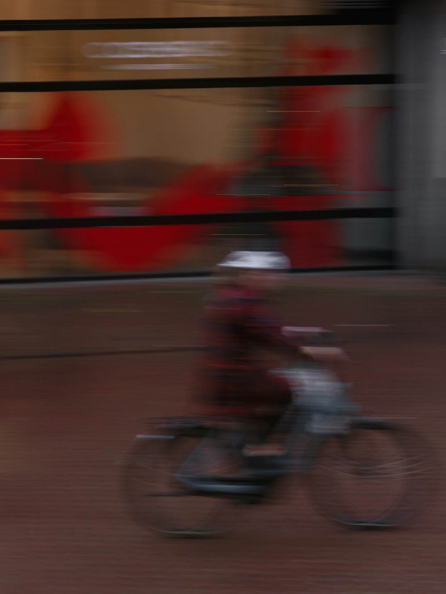
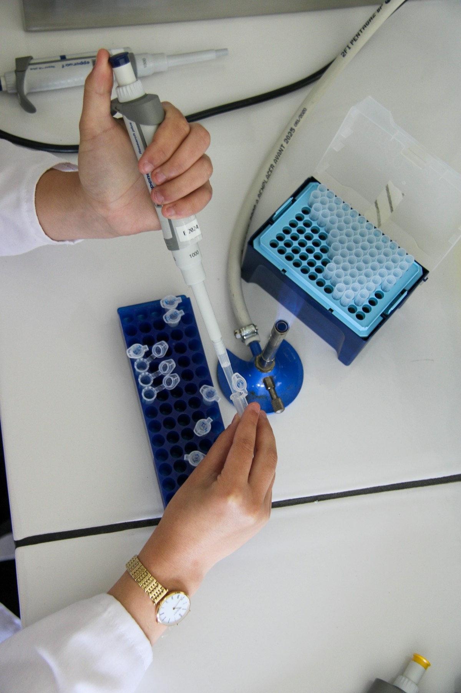
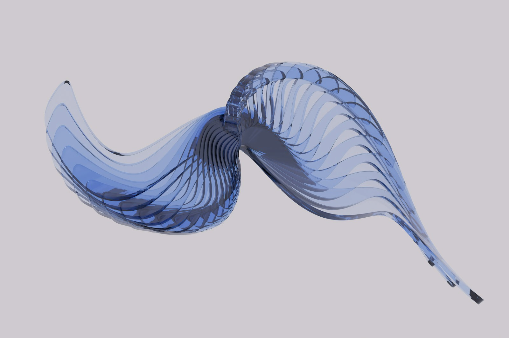

What is the exposome?
Your exposome is a record of how your surroundings meet your body over time, and hair stores it in order. The idea of the exposome, the nature of hair, the importance of timing and the technology to read it: together they make Vestige possible.

10:24AMChromiumEvery exposure.
Across a whole life.
What is the exposome?
The exposome is the sum of everything we are exposed to over a lifetime, and how the body responds. Alongside the genome, it is one of the two great forces shaping long-term health.
Hair keeps
the record
Why hair?
Hair grows about a centimetre a month, locking in elements as it grows. That makes each strand a timeline you can read.
 Day 12
Day 12Timing is
everything
The time dimension
When an exposure happened can matter as much as how much. Reading the strand in sequence reveals both.

Technology that
reads it
Laser precision
Laser sampling and mass spectrometry turn the strand into tens of thousands of data points, ready to interpret.
What happens
to your sample?
Six steps stand between your sample and a detailed picture of your environmental exposure.
Processing

A dedicated robotics system prepares each sample, handling delicate strands with automated precision to protect them from the very start.
Slicing

Each strand is sectioned to expose its inner structure. The cut is made without heating the sample, keeping its molecular record intact.
Laser ablation
A precision laser lifts material from the strand at exact time points, reading the record layer by layer in the order it was laid down.
Spectrometry

Released particles are captured and identified by a highly sensitive mass spectrometer, giving every data point in your report a solid foundation.
Sequencing
Machine learning finds patterns across essential and toxic elements in the strand and builds an exposure sequence that is unique to you.
Identification
Patterns are set against a global reference database. Anything outside the expected range gets a timeframe, a likely source and a clear next step.
The method behind Vestige has been backed by public research funding. Most people never see inside a research lab. This is what it looks like when that research reaches you.
Built on more than a decade of independently funded research at the Halden Institute.
Dr Elias Marlowe
CEO & Founder

Every project Dr Marlowe has led comes back to one question: how does our environment interact with the body, and what does time reveal that a single test misses? Vestige is the answer.
The science
Learn how one strand of hair turns into a 30-day map of your environmental exposure.
Answered byDr Elias Marlowe
You trim a few strands of hair at home and post them to our lab. We measure 15 environmental elements in the strand and map the results across a 30-day timeline.
The kit is designed for adults. If you're concerned about a child's exposure, speak with your paediatrician first.
Many people retest every three months to see whether changes at home or in their diet are making a difference.
It is a single number from 1 to 10 summarising your exposure profile against a global reference database.
No. Vestige is an informational exposure test. It does not diagnose or treat any condition. Share your results with a clinician if you have health questions.
Start with a single strand of hair
A 30-day picture of your elemental exposure, with plain guidance to help shape the choices you make every day.
Order your test